Chapter 7 Data Visualization with ggplot2
teaching: 80
exercises: 35
adapted from: https://datacarpentry.org/r-socialsci/04-ggplot2/index.html
questions:
- What are the components of a ggplot?
- How do I create scatterplots, boxplots, and barplots?
- How can I change the aesthetics (ex. colour, transparency) of my plot?
- How can I create multiple plots at once?
objectives:
- Produce scatter plots, boxplots, and time series plots using ggplot.
- Set universal plot settings.
- Describe what faceting is and apply faceting in ggplot.
- Modify the aesthetics of an existing ggplot plot (including axis labels and color).
- Build complex and customized plots from data in a data frame.
keypoints:
ggplot2is a flexible and useful tool for creating plots in R.
- The data set and coordinate system can be defined using the
ggplotfunction.
- Additional layers, including geoms, are added using the
+operator.
- Boxplots are useful for visualizing the distribution of a continuous variable.
- Barplot are useful for visualizing categorical data.
- Faceting allows you to generate multiple plots based on a categorical variable.
We start by loading the required package. ggplot2 is also included in the tidyverse package.
library(tidyverse)If not still in the workspace, load the data we saved in the previous lesson.
interviews_plotting <- read_csv("data_output/interviews_plotting.csv")## Parsed with column specification:
## cols(
## .default = col_logical(),
## key_ID = col_double(),
## village = col_character(),
## interview_date = col_datetime(format = ""),
## no_membrs = col_double(),
## years_liv = col_double(),
## respondent_wall_type = col_character(),
## rooms = col_double(),
## memb_assoc = col_character(),
## affect_conflicts = col_character(),
## liv_count = col_double(),
## no_meals = col_double(),
## instanceID = col_character(),
## number_months_lack_food = col_double(),
## number_items = col_double()
## )## See spec(...) for full column specifications.7.1 Plotting with ggplot2
ggplot2 is a plotting package that makes it simple to create complex plots from data stored in a data frame. It provides a programmatic interface for specifying what variables to plot, how they are displayed, and general visual properties. Therefore, we only need minimal changes if the underlying data change or if we decide to change from a bar plot to a scatterplot. This helps in creating publication quality plots with minimal amounts of adjustments and tweaking.
ggplot2 functions like data in the ‘long’ format, i.e., a column for every dimension, and a row for every observation. Well-structured data will save you lots of time when making figures with ggplot2
ggplot graphics are built step by step by adding new elements. Adding layers in this fashion allows for extensive flexibility and customization of plots.
To build a ggplot, we will use the following basic template that can be used for different types of plots:
ggplot(data = <DATA>, mapping = aes(<MAPPINGS>)) + <GEOM_FUNCTION>()- use the
ggplot()function and bind the plot to a specific data frame using thedataargument
ggplot(data = interviews_plotting)- define a mapping (using the aesthetic (
aes) function), by selecting the variables to be plotted and specifying how to present them in the graph, e.g. as x/y positions or characteristics such as size, shape, color, etc.
ggplot(data = interviews_plotting, aes(x = no_membrs, y = number_items))add ‘geoms’ – graphical representations of the data in the plot (points, lines, bars).
ggplot2offers many different geoms; we will use some common ones today, including:geom_point()for scatter plots, dot plots, etc.geom_boxplot()for, well, boxplots!geom_line()for trend lines, time series, etc.
To add a geom to the plot use the + operator. Because we have two continuous variables, let’s use geom_point() first:
ggplot(data = interviews_plotting, aes(x = no_membrs, y = number_items)) +
geom_point()
The + in the ggplot2 package is particularly useful because it allows you to modify existing ggplot objects. This means you can easily set up plot templates and conveniently explore different types of plots, so the above plot can also be generated with code like this:
# Assign plot to a variable
interviews_plot <- ggplot(data = interviews_plotting, aes(x = no_membrs, y = number_items))
# Draw the plot
interviews_plot +
geom_point()7.1 Notes
- Anything you put in the
ggplot()function can be seen by any geom layers that you add (i.e., these are universal plot settings). This includes the x- and y-axis mapping you set up inaes().- You can also specify mappings for a given geom independently of the mapping defined globally in the
ggplot()function.- The
+sign used to add new layers must be placed at the end of the line containing the previous layer. If, instead, the+sign is added at the beginning of the line containing the new layer,ggplot2will not add the new layer and will return an error message. {: .callout}
## This is the correct syntax for adding layers
interviews_plot +
geom_point()
## This will not add the new layer and will return an error message
interviews_plot
+ geom_point()7.2 Building your plots iteratively
Building plots with ggplot2 is typically an iterative process. We start by defining the dataset we’ll use, lay out the axes, and choose a geom:
ggplot(data = interviews_plotting, aes(x = no_membrs, y = number_items)) +
geom_point()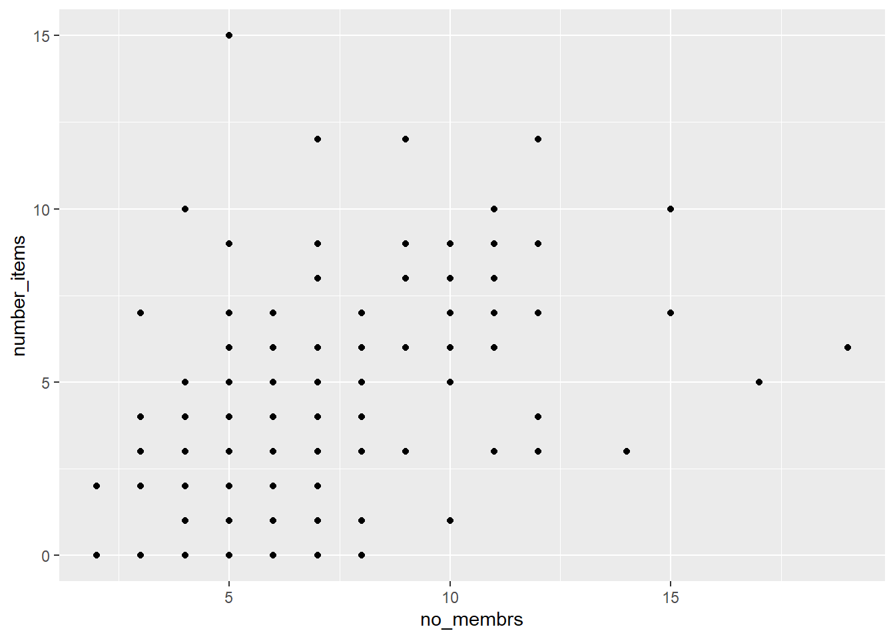
Then, we start modifying this plot to extract more information from it. For instance, we can add transparency (alpha) to avoid overplotting:
ggplot(data = interviews_plotting, aes(x = no_membrs, y = number_items)) +
geom_point(alpha = 0.5)That only helped a little bit with the overplotting problem. We can also introduce a little bit of randomness into the position of our points using the geom_jitter() function.
ggplot(data = interviews_plotting, aes(x = no_membrs, y = number_items)) +
geom_jitter(alpha = 0.5)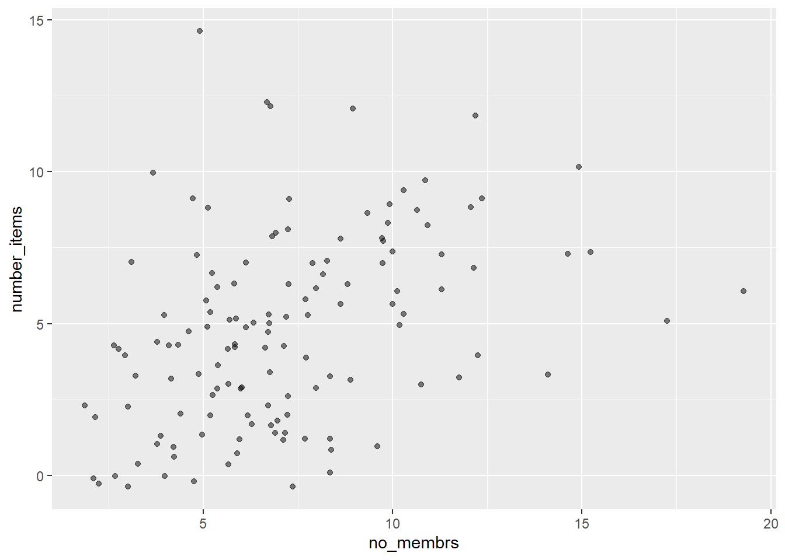
We can also add colors for all the points:
ggplot(data = interviews_plotting, aes(x = no_membrs, y = number_items)) +
geom_jitter(alpha = 0.5, color = "blue")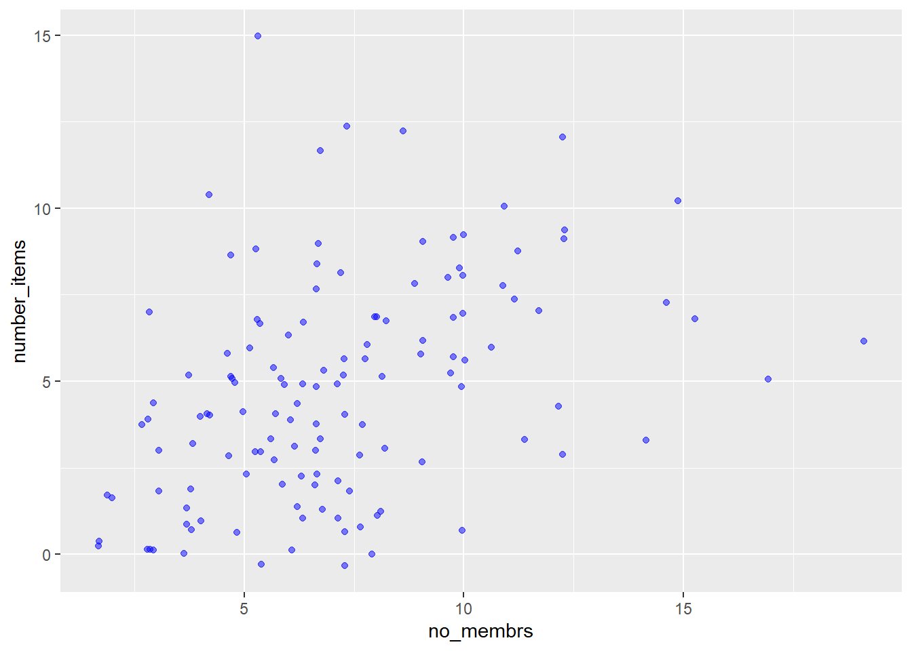
Or to color each species in the plot differently, you could use a vector as an input to the argument color. Because we are now mapping features of the data to a color, instead of setting one color for all points, the color now needs to be set inside a call to the aes function. ggplot2 will provide a different color corresponding to different values in the vector. We set the value of alpha outside of the aes function call because we are using the same value for all points. Here is an example where we color by village:
ggplot(data = interviews_plotting, aes(x = no_membrs, y = number_items)) +
geom_jitter(aes(color = village), alpha = 0.5)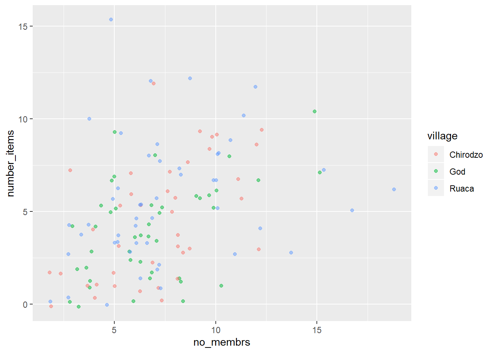
There appears to be a positive trend between number of household members and number of items owned (from the list provided). This trend does not appear to be different by village.
7.2 Exercise
Use what you just learned to create a scatter plot of
roomsbyvillagewith therespondent_wall_typeshowing in different colors. Is this a good way to show this type of data?7.2 Solution
ggplot(data = interviews_plotting, aes(x = village, y = rooms)) + geom_jitter(aes(color = respondent_wall_type))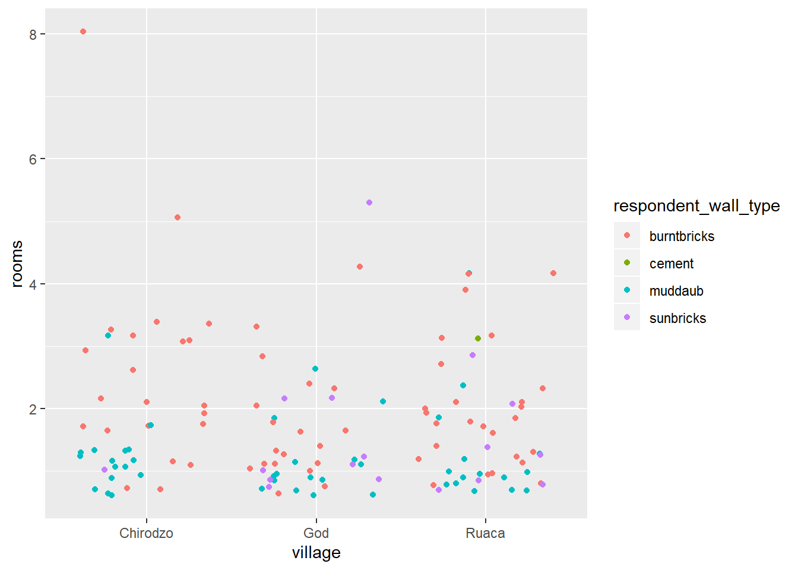 This is not a good way to show this type of data because it is difficult to distinguish between villages. {: .solution} {: .challenge}
7.3 Boxplot
We can use boxplots to visualize the distribution of rooms for each wall type:
ggplot(data = interviews_plotting, aes(x = respondent_wall_type, y = rooms)) +
geom_boxplot()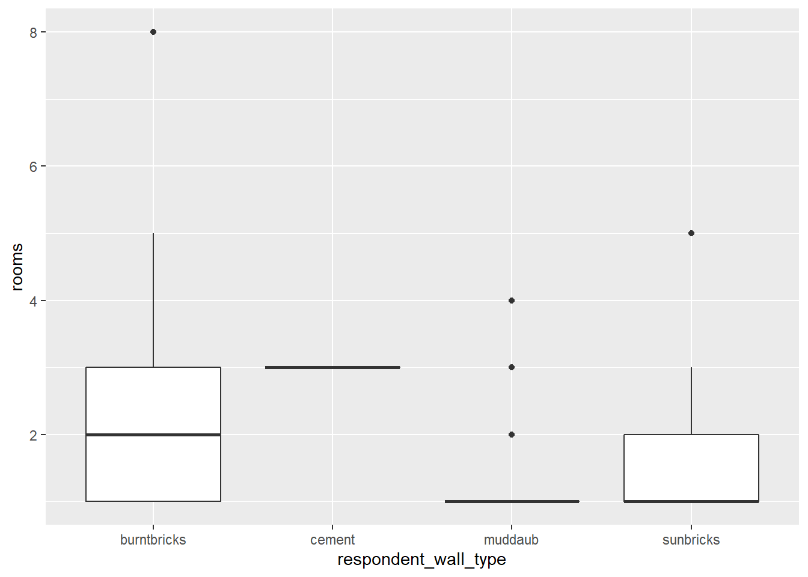
By adding points to a boxplot, we can have a better idea of the number of measurements and of their distribution:
ggplot(data = interviews_plotting, aes(x = respondent_wall_type, y = rooms)) +
geom_boxplot(alpha = 0) +
geom_jitter(alpha = 0.5, color = "tomato")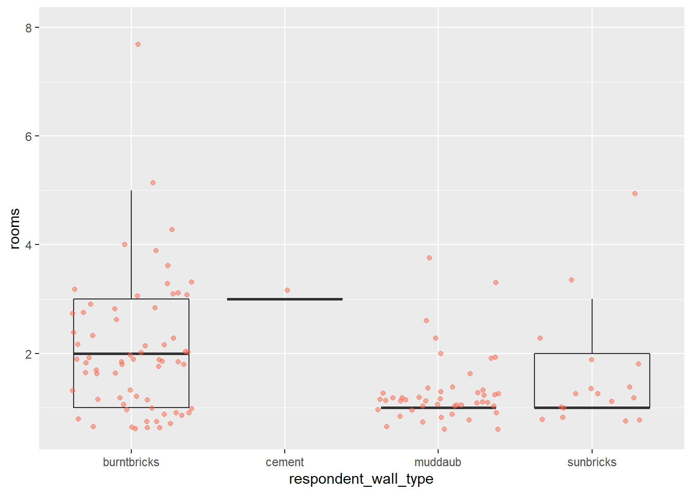
We can see that muddaub houses and sunbrick houses tend to be smaller than burntbrick houses.
Notice how the boxplot layer is behind the jitter layer? What do you need to change in the code to put the boxplot in front of the points such that it’s not hidden?
7.3 Exercise
Boxplots are useful summaries, but hide the shape of the distribution. For example, if the distribution is bimodal, we would not see it in a boxplot. An alternative to the boxplot is the violin plot, where the shape (of the density of points) is drawn.
- Replace the box plot with a violin plot; see
geom_violin().7.3 Solution
ggplot(data = interviews_plotting, aes(x = respondent_wall_type, y = rooms)) + geom_violin(alpha = 0) + geom_jitter(alpha = 0.5, color = "tomato")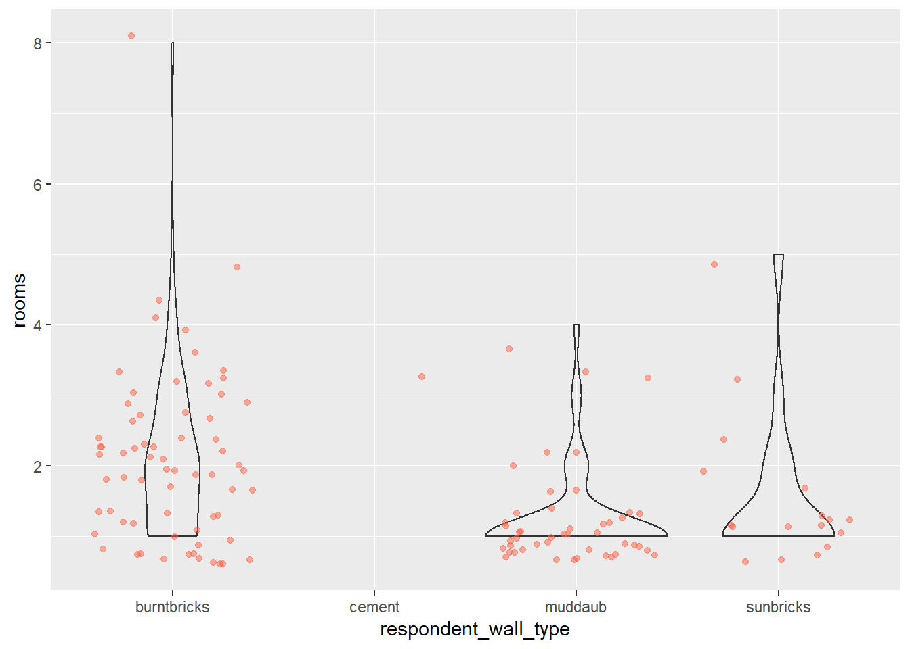 {: .solution}
So far, we’ve looked at the distribution of room number within wall type. Try making a new plot to explore the distribution of another variable within wall type.
- Create a boxplot for
liv_countfor each wall type. Overlay the boxplot layer on a jitter layer to show actual measurements.7.3 Solution
ggplot(data = interviews_plotting, aes(x = respondent_wall_type, y = liv_count)) + geom_boxplot(alpha = 0) + geom_jitter(alpha = 0.5)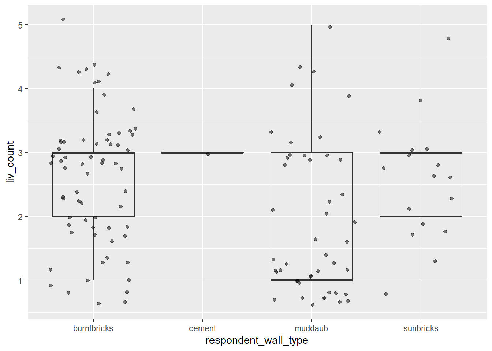 {: .solution}
- Add color to the data points on your boxplot according to whether the respondent is a member of an irrigation association (
memb_assoc).7.3 Solution
ggplot(data = interviews_plotting, aes(x = respondent_wall_type, y = liv_count)) + geom_boxplot(alpha = 0) + geom_jitter(aes(alpha = 0.5, color = memb_assoc))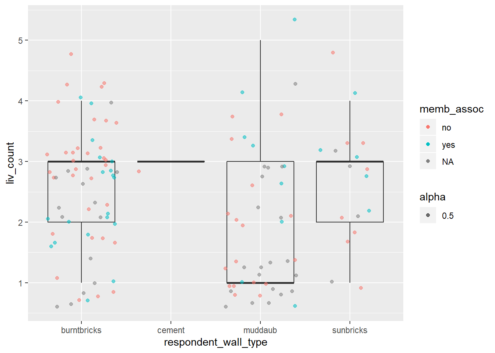 {: .solution} {: .challenge}
7.4 Barplots
Barplots are also useful for visualizing categorical data. By default, geom_bar accepts a variable for x, and plots the number of instances each value of x (in this case, wall type) appears in the dataset.
ggplot(data = interviews_plotting, aes(x = respondent_wall_type)) +
geom_bar()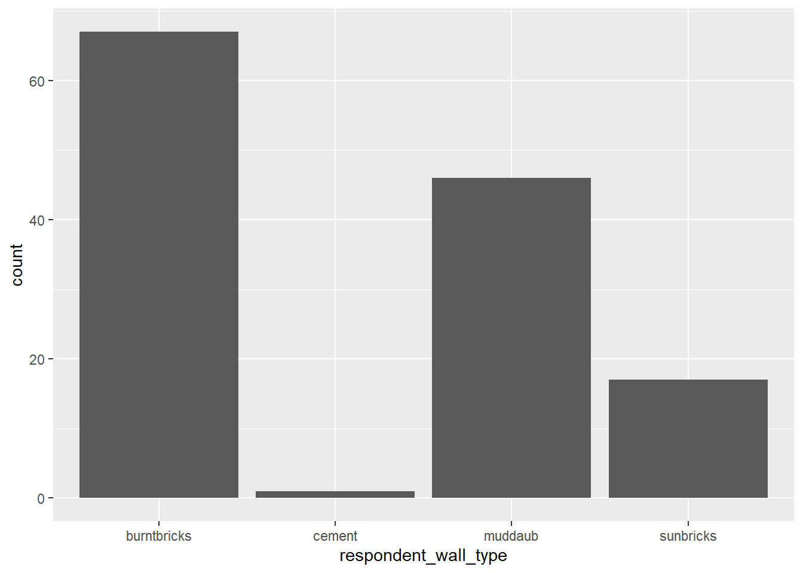
We can use the fill aesthetic for the geom_bar() geom to color bars by the portion of each count that is from each village.
ggplot(data = interviews_plotting, aes(x = respondent_wall_type)) +
geom_bar(aes(fill = village))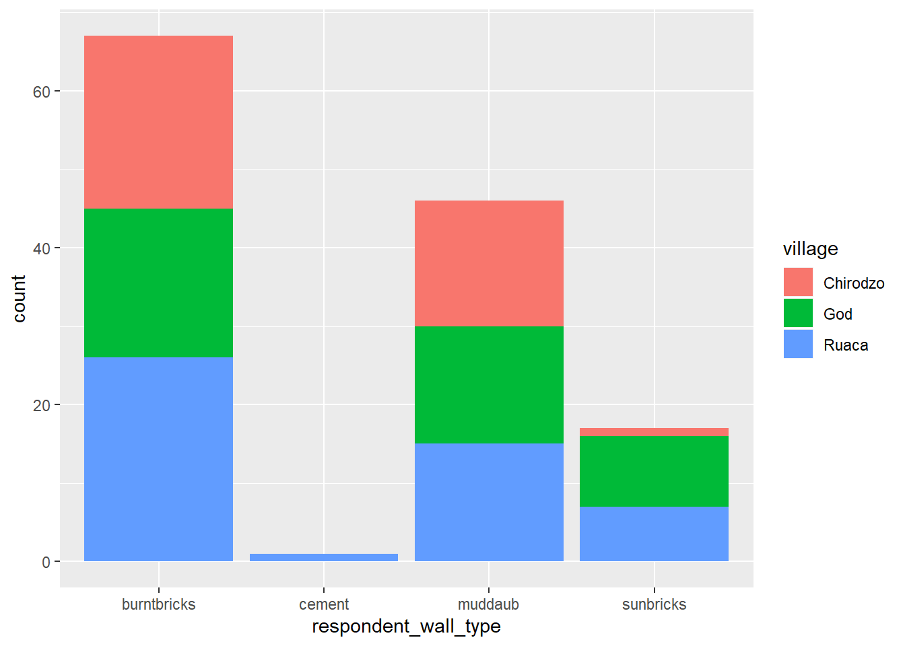
This creates a stacked bar chart. These are generally more difficult to read than side-by-side bars. We can separate the portions of the stacked bar that correspond to each village and put them side-by-side by using the position argument for geom_bar() and setting it to “dodge”.
ggplot(data = interviews_plotting, aes(x = respondent_wall_type)) +
geom_bar(aes(fill = village), position = "dodge")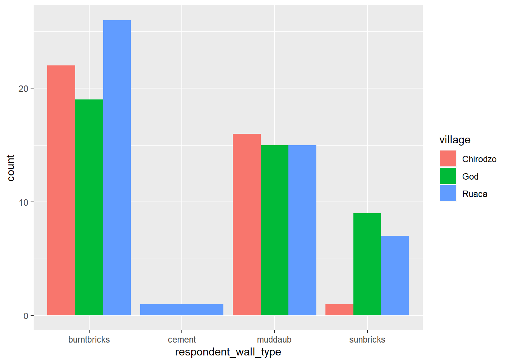
This is a nicer graphic, but we’re more likely to be interested in the proportion of each housing type in each village than in the actual count of number of houses of each type (because we might have sampled different numbers of households in each village). To compare proportions, we will first create a new data frame (percent_wall_type) with a new column named “percent” representing the percent of each house type in each village. We will remove houses with cement walls, as there was only one in the dataset.
percent_wall_type <- interviews_plotting %>%
filter(respondent_wall_type != "cement") %>%
count(village, respondent_wall_type) %>%
group_by(village) %>%
mutate(percent = n / sum(n)) %>%
ungroup()Now we can use this new data frame to create our plot showing the percentage of each house type in each village.
ggplot(percent_wall_type, aes(x = village, y = percent, fill = respondent_wall_type)) +
geom_bar(stat = "identity", position = "dodge")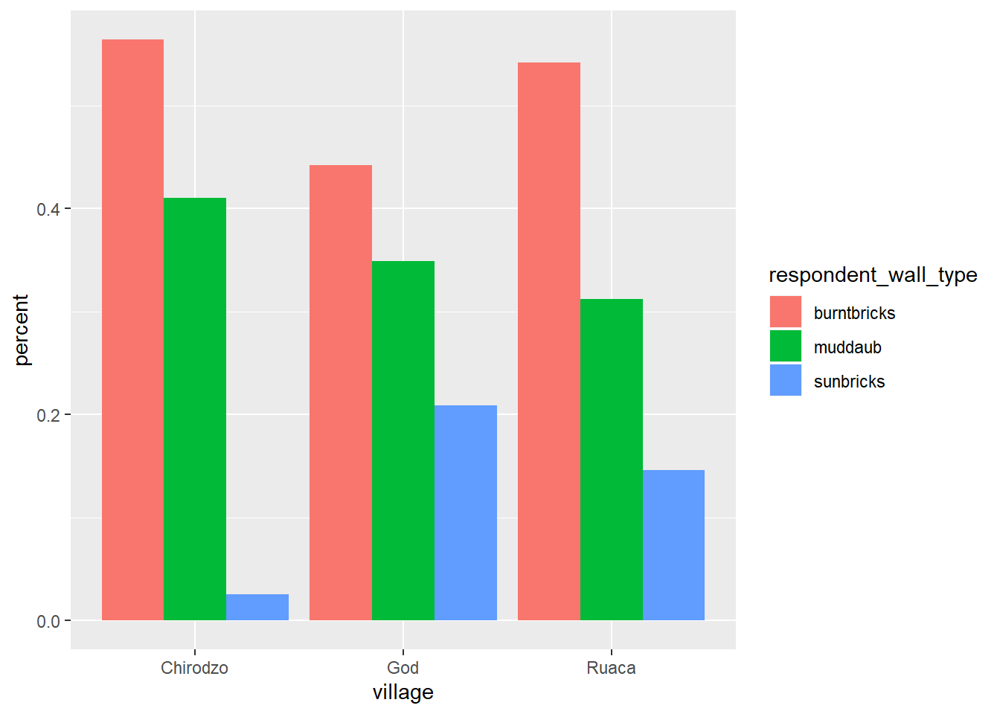
7.4 Exercise
Create a bar plot showing the proportion of respondents in each village who are or are not part of an irrigation association (
memb_assoc). Include only respondents who answered that question in the calculations and plot. Which village had the lowest proportion of respondents in an irrigation association?7.4 Solution
percent_memb_assoc <- interviews_plotting %>% filter(!is.na(memb_assoc)) %>% count(village, memb_assoc) %>% group_by(village) %>% mutate(percent = n / sum(n)) %>% ungroup() ggplot(percent_memb_assoc, aes(x = village, y = percent, fill = memb_assoc)) + geom_bar(stat = "identity", position = "dodge")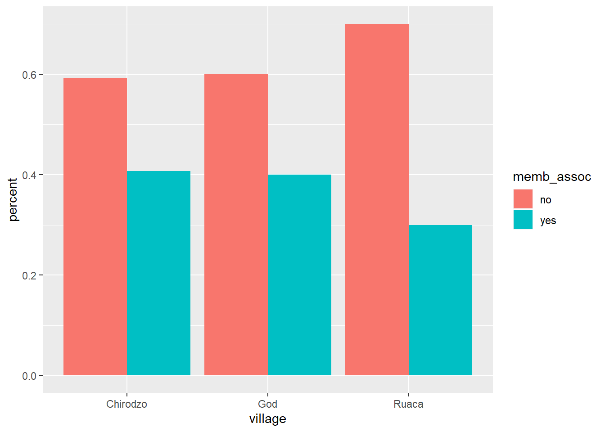
Ruaca had the lowest proportion of members in an irrigation association. {: .solution} {: .challenge}
7.5 Adding Labels and Titles
By default, the axes labels on a plot are determined by the name of the variable being plotted. However, ggplot2 offers lots of customization options, like specifying the axes labels, and adding a title to the plot with relatively few lines of code. We will add more informative x and y axis labels to our plot of proportion of house type by village and also add a title.
ggplot(percent_wall_type, aes(x = village, y = percent, fill = respondent_wall_type)) +
geom_bar(stat = "identity", position = "dodge") +
labs(title="Proportion of wall type by village",
x="Wall Type",
y="Percent")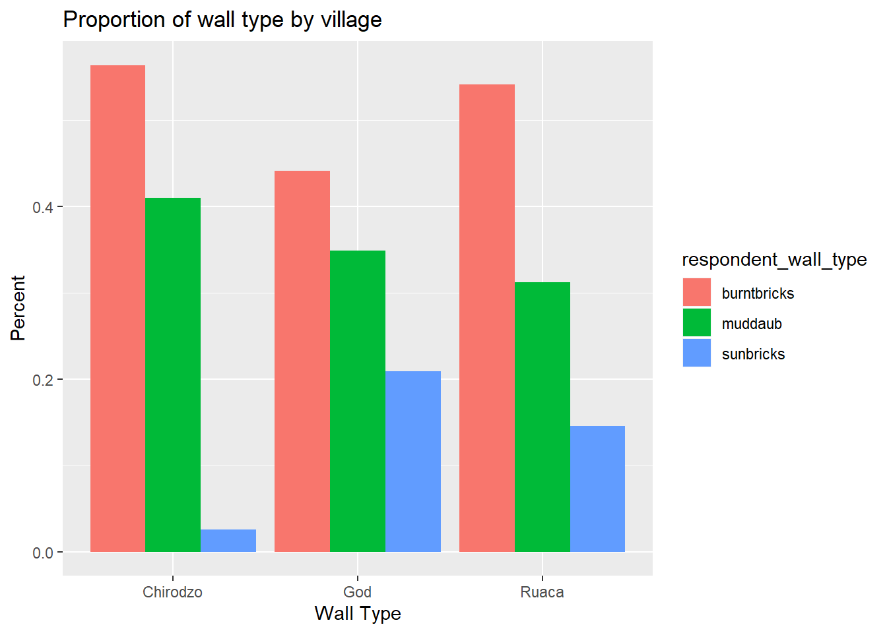
7.6 Faceting
Rather than creating a single plot with side-by-side bars for each village, we may want to create multiple plot, where each plot shows the data for a single village. This would be especially useful if we had a large number of villages that we had sampled, as a large number of side-by-side bars will become more difficult to read.
ggplot2 has a special technique called faceting that allows the user to split one plot into multiple plots based on a factor included in the dataset. We will use it to split our barplot of housing type proportion by village so that each village has it’s own panel in a multi-panel plot:
ggplot(percent_wall_type, aes(x = respondent_wall_type, y = percent)) +
geom_bar(stat = "identity", position = "dodge") +
labs(title="Proportion of wall type by village",
x="Wall Type",
y="Percent") +
facet_wrap(~ village)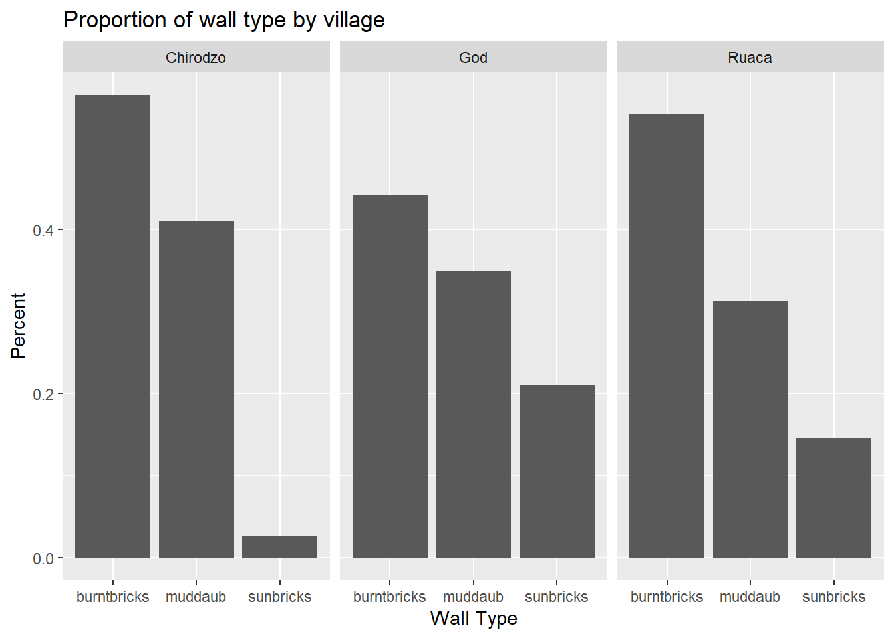
Click the “Zoom” button in your RStudio plots pane to view a larger version of this plot.
Usually plots with white background look more readable when printed. We can set the background to white using the function theme_bw(). Additionally, you can remove the grid:
ggplot(percent_wall_type, aes(x = respondent_wall_type, y = percent)) +
geom_bar(stat = "identity", position = "dodge") +
labs(title="Proportion of wall type by village",
x="Wall Type",
y="Percent") +
facet_wrap(~ village) +
theme_bw() +
theme(panel.grid = element_blank())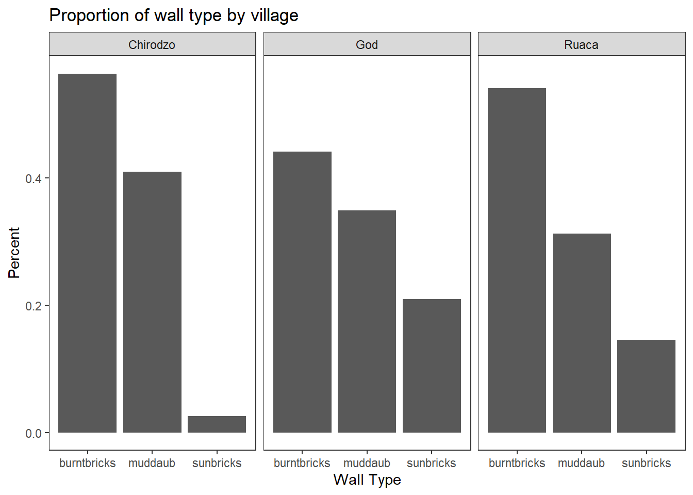
What if we wanted to see the proportion of respondents in each village who owned a particular item? We can calculate the percent of people in each village who own each item and then create a faceted series of bar plots where each plot is a particular item. First we need to calculate the percentage of people in each village who own each item:
percent_items <- interviews_plotting %>%
gather(items, items_owned_logical, bicycle:no_listed_items) %>%
filter(items_owned_logical) %>%
count(items, village) %>%
## add a column with the number of people in each village
mutate(people_in_village = case_when(village == "Chirodzo" ~ 39,
village == "God" ~ 43,
village == "Ruaca" ~ 49)) %>%
mutate(percent = n / people_in_village)To calculate this percentage data frame, we needed to use the case_when() parameter within mutate(). In our earlier examples, we knew that each house was one and only one of the types specified. However, people can (and do) own more than one item, so we can’t use the sum of the count column to give us the denominator in our percentage calculation. Instead, we need to specify the number of respondents in each village. Using this data frame, we can now create a multi-paneled bar plot.
ggplot(percent_items, aes(x = village, y = percent)) +
geom_bar(stat = "identity", position = "dodge") +
facet_wrap(~ items) +
theme_bw() +
theme(panel.grid = element_blank())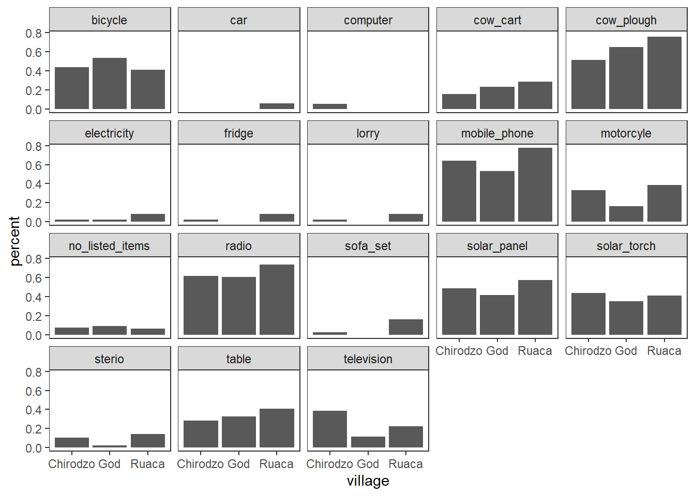
7.7 ggplot2 themes
In addition to theme_bw(), which changes the plot background to white, ggplot2 comes with several other themes which can be useful to quickly change the look of your visualization. The complete list of themes is available at http://docs.ggplot2.org/current/ggtheme.html. theme_minimal() and theme_light() are popular, and theme_void() can be useful as a starting point to create a new hand-crafted theme.
The ggthemes package provides a wide variety of options (including an Excel 2003 theme). The ggplot2 extensions website provides a list of packages that extend the capabilities of ggplot2, including additional themes.
7.7 Exercise
Experiment with at least two different themes. Build the previous plot using each of those themes. Which do you like best? {: .challenge}
7.8 Customization
Take a look at the ggplot2 cheat sheet, and think of ways you could improve the plot.
Now, let’s change names of axes to something more informative than ‘village’ and ‘percent’ and add a title to the figure:
ggplot(percent_items, aes(x = village, y = percent)) +
geom_bar(stat = "identity", position = "dodge") +
facet_wrap(~ items) +
labs(title = "Percent of respondents in each village who owned each item",
x = "Village",
y = "Percent of Respondents") +
theme_bw()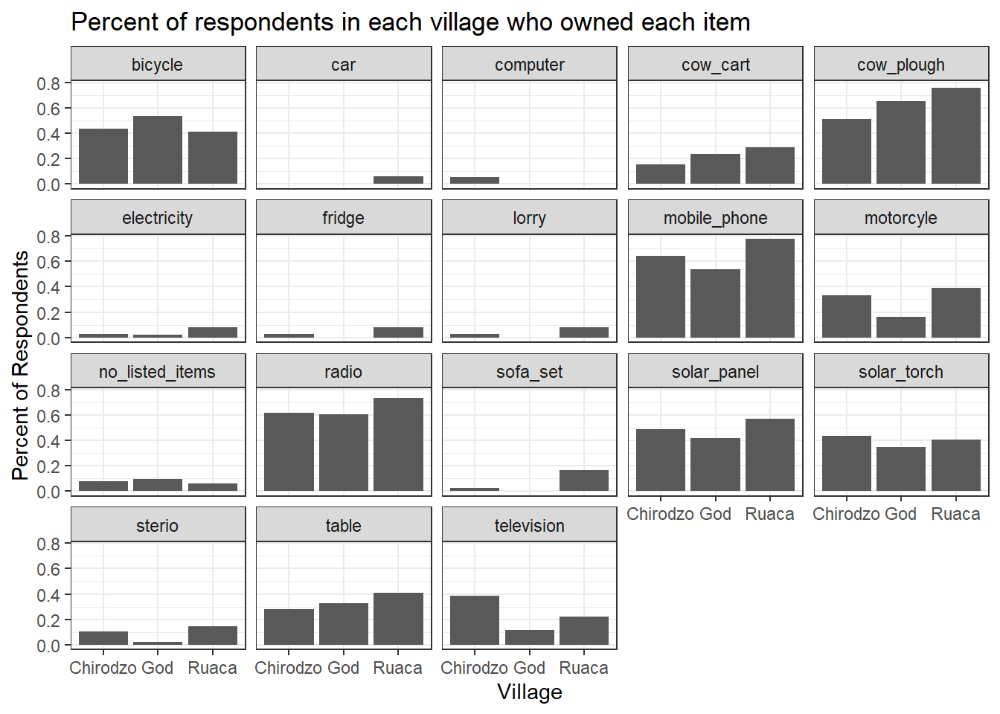
The axes have more informative names, but their readability can be improved by increasing the font size:
ggplot(percent_items, aes(x = village, y = percent)) +
geom_bar(stat = "identity", position = "dodge") +
facet_wrap(~ items) +
labs(title = "Percent of respondents in each village who owned each item",
x = "Village",
y = "Percent of Respondents") +
theme_bw() +
theme(text=element_text(size = 16))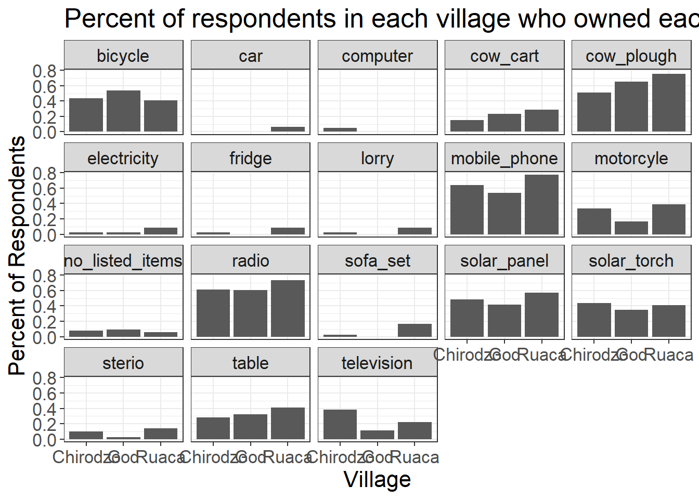
Note that it is also possible to change the fonts of your plots. If you are on Windows, you may have to install the extrafont package, and follow the instructions included in the README for this package.
After our manipulations, you may notice that the values on the x-axis are still not properly readable. Let’s change the orientation of the labels and adjust them vertically and horizontally so they don’t overlap. You can use a 90-degree angle, or experiment to find the appropriate angle for diagonally oriented labels. With a larger font, the title also runs off. We can \n in the string for the title to insert a new line:
ggplot(percent_items, aes(x = village, y = percent)) +
geom_bar(stat = "identity", position = "dodge") +
facet_wrap(~ items) +
labs(title = "Percent of respondents in each village \n who owned each item",
x = "Village",
y = "Percent of Respondents") +
theme_bw() +
theme(axis.text.x = element_text(colour = "grey20", size = 12, angle = 45, hjust = 0.5, vjust = 0.5),
axis.text.y = element_text(colour = "grey20", size = 12),
text = element_text(size = 16))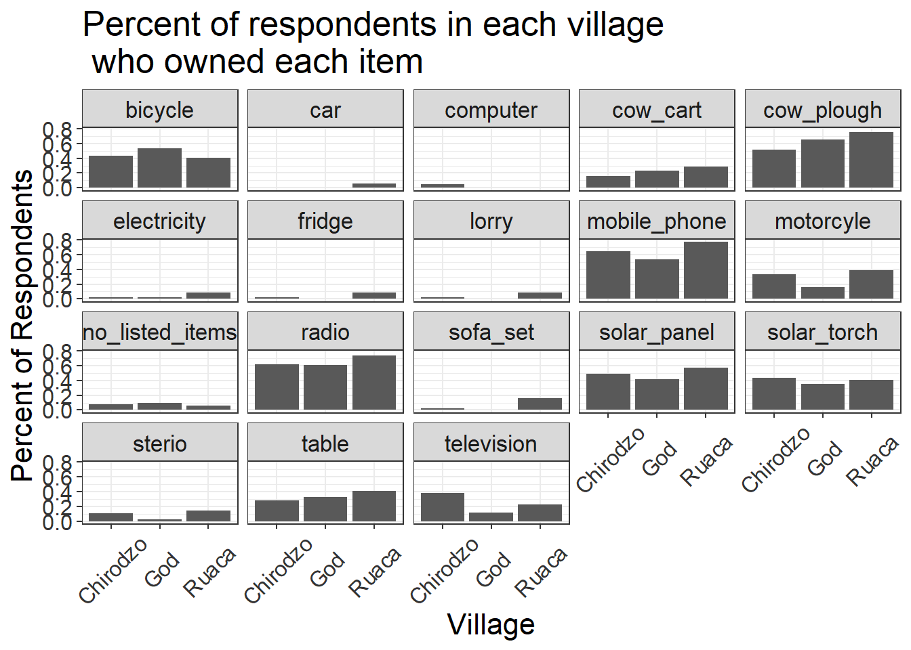
If you like the changes you created better than the default theme, you can save them as an object to be able to easily apply them to other plots you may create. We can also add plot.title = element_text(hjust = 0.5) to center the title:
grey_theme <- theme(axis.text.x = element_text(colour = "grey20", size = 12, angle = 45, hjust = 0.5, vjust = 0.5),
axis.text.y = element_text(colour = "grey20", size = 12),
text = element_text(size = 16),
plot.title = element_text(hjust = 0.5))
ggplot(percent_items, aes(x = village, y = percent)) +
geom_bar(stat = "identity", position = "dodge") +
facet_wrap(~ items) +
labs(title = "Percent of respondents in each village \n who owned each item",
x = "Village",
y = "Percent of Respondents") +
grey_theme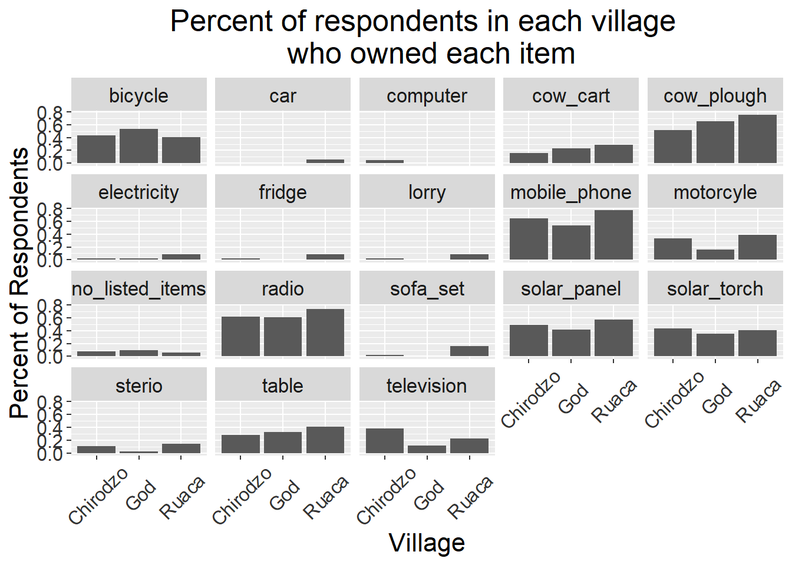
7.8 Exercise
With all of this information in hand, please take another five minutes to either improve one of the plots generated in this exercise or create a beautiful graph of your own. Use the RStudio
ggplot2cheat sheet for inspiration. Here are some ideas:
- See if you can make the bars white with black outline.
- Try using a different color palette (see http://www.cookbook-r.com/Graphs/Colors_(ggplot2)/). {: .challenge}
After creating your plot, you can save it to a file in your favorite format. The Export tab in the Plot pane in RStudio will save your plots at low resolution, which will not be accepted by many journals and will not scale well for posters.
Instead, use the ggsave() function, which allows you easily change the dimension and resolution of your plot by adjusting the appropriate arguments (width, height and dpi).
Make sure you have the fig_output/ folder in your working directory.
my_plot <- ggplot(percent_items, aes(x = village, y = percent)) +
geom_bar(stat = "identity", position = "dodge") +
facet_wrap(~ items) +
labs(title = "Percent of respondents in each village \n who owned each item",
x = "Village",
y = "Percent of Respondents") +
theme_bw() +
theme(axis.text.x = element_text(colour = "grey20", size = 12, angle = 45, hjust = 0.5, vjust = 0.5),
axis.text.y = element_text(colour = "grey20", size = 12),
text = element_text(size = 16),
plot.title = element_text(hjust = 0.5))
ggsave("fig_output/name_of_file.png", my_plot, width = 15, height = 10)Note: The parameters width and height also determine the font size in the saved plot.